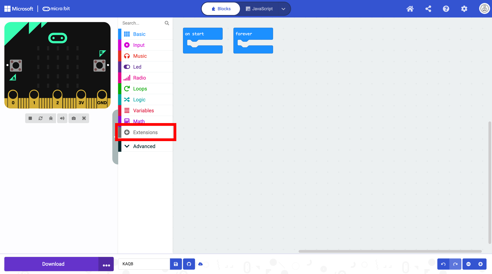

Loading the Extension#
You must first import the blocks necessary to operate the Kitronik Air Quality and Environmental Board.
Click on Extensions in the Toolbox.

A new window will open. Type “air quality” in the search box. Two versions of the extension will be returned in the search. Select the second with ‘v2’ in the name.

After you select the extension, the blocks are now available in MakeCode.

A MakeCode link to the extension preloaded can be opened here (right-click and open in a new tab or window).